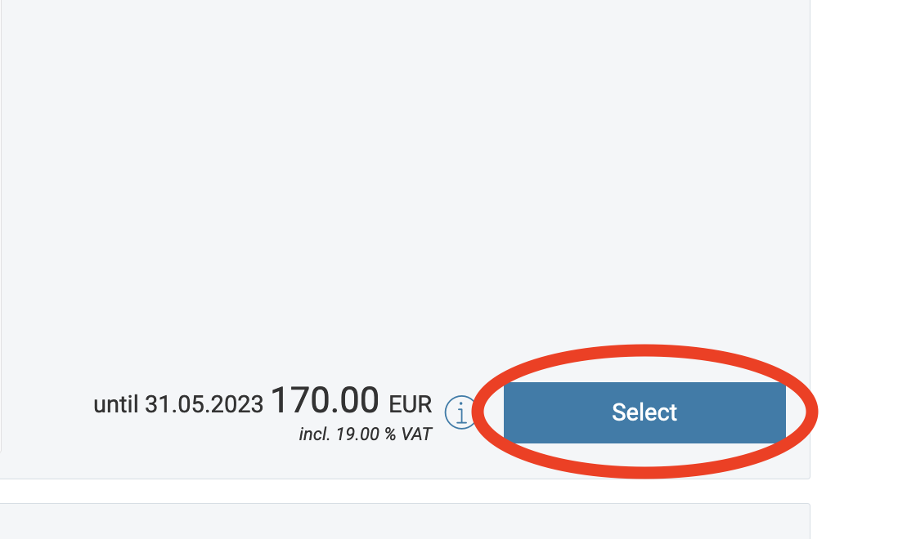

Due to a security breach on our Faculty's servers, the actual ICLC16 site is down at the moment. We expect it to be back online by June 8.
As soon as the ICLC16 site is back, you'll be able to find it here. We'll also redirect iclc16.com to the actual site as soon as it is becomes available again, but there might be small delay.
In the meantime, you can find an archived snapshot of the ICLC16 site here.
The registration site still works, though. You can register here.
If you are a bachelor or masters student or a member of HHU, please register here instead.
The preliminary skeleton programme of the conference can be found here.
When registering via Converia, make sure to click the "Select" button in the first box.
